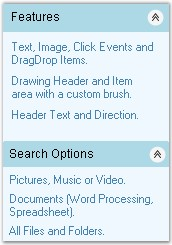
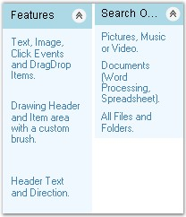
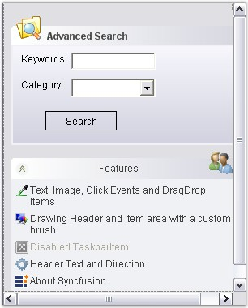

The behavior of the XPTaskBar can be controlled using the properties given below.
This section discusses the behavior settings of the XPTaskBar.
|
XPTaskBar Property |
Description |
Type of Property |
Value It Accepts |
Property Syntax |
Sub Properties |
More Information |
|
AllowDrop |
Gets / sets a value indicating whether the control can accept data that the user drags on it. |
Normal |
Boolean [true/false] |
Public Property AllowDrop As Boolean this.xpTaskBar1.AllowDrop = true; |
- |
- |
|
AutoPersistStates |
Specifies whether to automatically persist the collapsed state of the child boxes. |
Normal |
Boolean [true/false] |
Public Property AutoPersistStates As Boolean this.xpTaskBar1.AutoPersistStates = true; |
No |
The expanded states of the child task bar boxes are cached as the users expands/collapses them, when this property is true. The cached state is persisted in the Isolated Storage, when this control is disposed. If the child task bar boxes are added to this control, the saved state is reapplied on the task bar boxes, when the application loads again. State is saved in the Isolated Storage of the system, scoped by the current user identity. You can control the persistent store and/or the time of persistence using LoadBoxExpandedStates() and SaveBoxExpandedStates() methods. |
|
VerticalLayout |
Gets / sets the value which determines whether the TaskBar Boxes should be aligned vertically or horizontally in the XPTaskBar control. The default layout is Vertical. |
Normal |
Boolean [true/false] |
Public Property VerticalLayout As Boolean this.xpTaskBar1.VerticalLayout = true; |
|
|
|
ColWidthOnHorizontalAlignment |
Specifies the width for each column in the Horizontal Layout mode. The default value is 100. VerticalLayout property must be set to 'False'. |
Normal |
Integer value |
public int ColWidthOnHorizontalAlignment { get; set; } this.xpTaskBar1.ColWidthOnHorizontalAlignment = 100; |
Yes. Set this property as false to make changes on Horizontal alignment. this.xpTaskBar1.VerticalLayout = false; |
|
|
[C#]
this.xpTaskBar1.AllowDrop = true; this.xpTaskBar1.AutoPersistStates = true; this.xpTaskBar1.ColWidthOnHorizontalAlignment = 100; this.xpTaskBar1.VerticalLayout = true; |
|
[VB.NET]
Me.xpTaskBar1.AllowDrop = True Me.xpTaskBar1.AutoPersistStates = True Me.xpTaskBar1.ColWidthOnHorizontalAlignment = 100 Me.xpTaskBar1.VerticalLayout = True |

Figure 938: Vertical Layout of XPTaskBar

Figure 939: Horizontal Layout of XPTaskBar with
ColumnWidthOnHorizontalAlignment property set to "100"
Vertical scrollbar will be automatically added to the XPTaskBar when the TaskBarBoxes are placed outside the TaskBar's client area, provided the XPTaskBar is in the Vertical Layout mode.
In the Horizontal Layout mode, the horizontal scrollbar appears on setting the ColWidthOnHorizontalLayout property to large values.
|
XPTaskBar Property |
Description |
|
AutoScroll |
Specifies the value indicating whether a container allows the user to scroll any control placed outside of it's visible boundaries. |
|
AutoScrollMargin |
Gets / sets the size of the AutoScroll margin. |
|
AutoScrollMinSize |
Gets /sets the minimum size of the AutoScroll. |
|
[C#]
this.xpTaskBar1.AutoScroll = true; this.xpTaskBar1.AutoScrollMargin = new System.Drawing.Size(5, 5); this.xpTaskBar1.AutoScrollMinSize = new System.Drawing.Size(3, 3); |
|
[VB.NET]
Me.xpTaskBar1.AutoScroll = True Me.xpTaskBar1.AutoScrollMargin = New System.Drawing.Size(5, 5) Me.xpTaskBar1.AutoScrollMinSize = New System.Drawing.Size(3, 3) |
The following screen shot illustrates the above settings.

Figure 940: AutoScroll set for the XPTaskBar